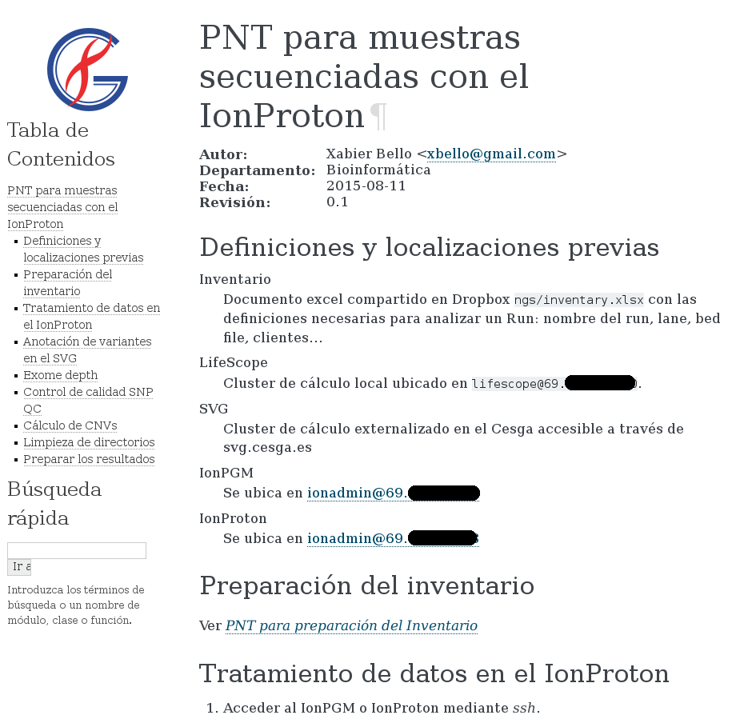

PNT (Protocolo Normalizado de Trabajo)
Normalización de protocolos de calidad
Requisitos
Claros.
Fáciles de seguir por personal cualificado.
Datos a incluir
Descripción.
Ámbito de aplicación.
Fecha.
Versión.
Protocolo afectado.
Creación de PNT
Una persona redacta.
Otra
persona revisa y aprueba.
El PNT
Descripción de tareas.
Muy detallado.
Descripción de responsabilidades.
Ejemplo PNT

Space
Forward
Right, Down, Page Down
Next slide
Left, Up, Page Up
Previous slide
P
Open presenter console
H
Toggle this help